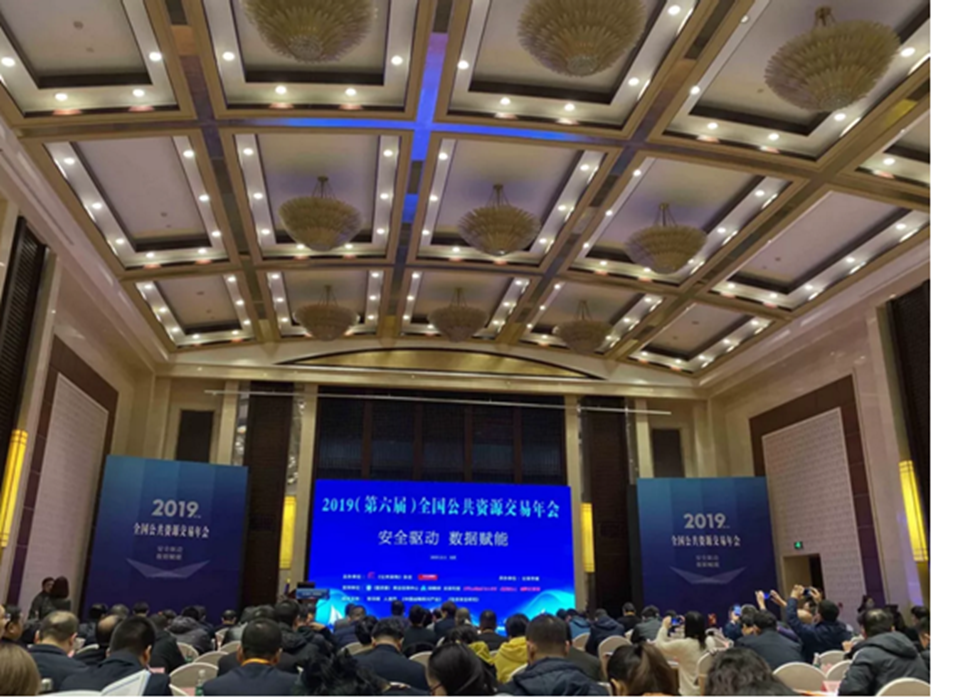
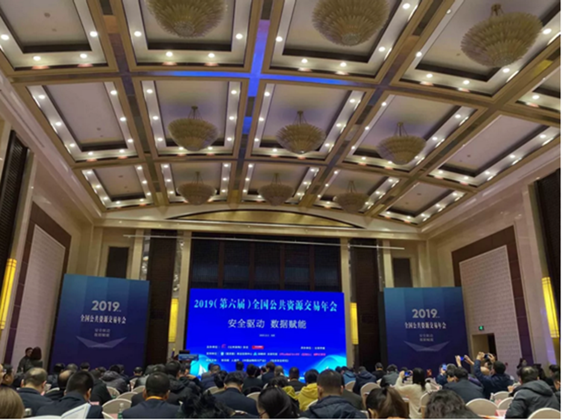
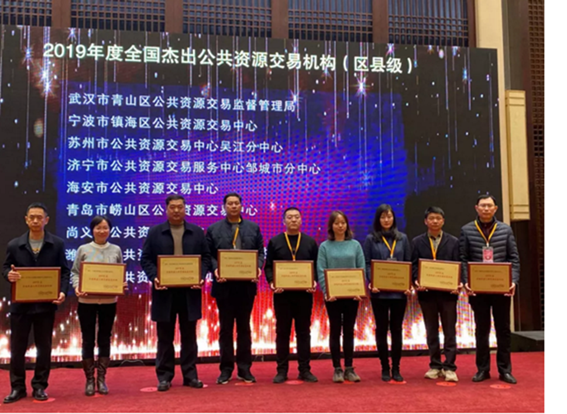
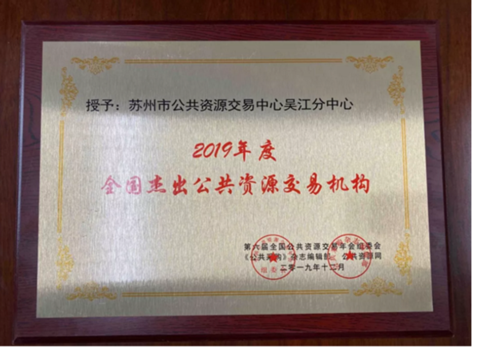

苏州市公共资源交易中心吴江分中心获全国杰出公共资源交易机构
【信息发布时间：2019-12-24阅读次数：】 【我要打印】 【关闭】
12月5日，由《公共采购》杂志编辑部、公共资源网举办的2019（第六届）全国公共资源交易年会在北京开幕。
 

本次会议以“安全驱动•数据赋能”为主题，全国省市县各级公共资源交易和监管机构及代理机构、优秀供应商300多位代表参加会议，共同研究探索公共资源交易领域的典型经验和创新做法。苏州市公共资源交易中心吴江分中心工作人员参与了此次活动，在此次年会上，苏州市公共资源交易中心吴江分中心获评“2019年度全国杰出公共资源交易机构（县级）” 。


2019年，苏州市公共资源交易中心吴江分中心紧紧融入吴江区经济发展大局，紧扣平台市县一体化工作中心，以确保公共资源交易活动“公开、公平、公正”为目标，加强制度规范建设，强化服务职能，创新工作方法，交易中心各项工作顺畅开展，呈现出良好发展态势，项目交易数量不断攀升，2019年1-11月，我区交易中心各类公共资源交易数量1443个，交易金额270.43亿元，节约资金约12亿元，在张家港市公共资源交易信息网-江苏信息网交易总体情况中位居前列。
苏州市公共资源交易中心吴江分中心将以此次荣誉为契机，加强与各交易中心合作沟通，共享有益经验，加快平台升级改造，着力推进平台标准化信息化智能化建设，不断提高公共资源交易服务水平，助力全区营商环境不断优化。